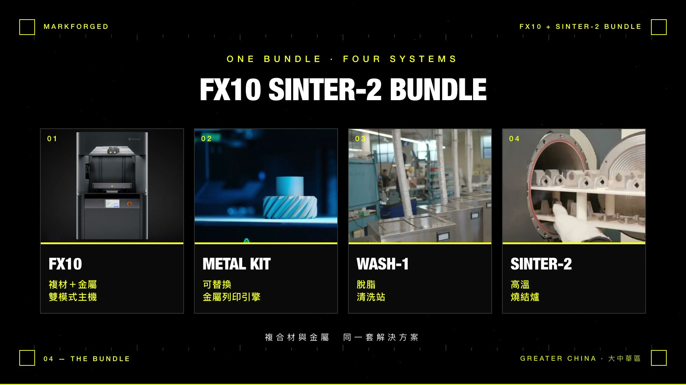

工業級積層製造
從複合材料到金屬、從桌面到工業，Markforged 覆蓋完整的積層製造需求。
專為前線快速製造設計的加固型工業 3D 列印機。整機收在加固運輸箱內，支援連續碳纖維及 Kevlar® 列印，另有無 Wi-Fi 版本，適合國防、海軍艦艇及偏遠工地等高挑戰環境。
為產線而生的工業級複合材料列印機，印治具、夾爪、工具與終端零件。支援五種連續纖維；在現行工業機中，Kevlar® 與高溫玻纖只有 X7 系列能印。
全球首台同時支援連續纖維複合材料與不鏽鋼金屬列印的工業機。建構體積約為 X7 的 1.9 倍，列印引擎可快速切換，Metal Kit 選配讓您在同一台機器上實現複合材料與金屬零件生產。
專為航太、國防與高溫工業設計的大型工業機。525 × 400 × 400 mm 建構體積、加熱腔體最高 200°C，支援 ULTEM™ 9085 與 Vega™ PEKK 等高性能工程材料，可一次列印大型一體成形結構件。

FX10 Sinter-2 Bundle 一套四件：FX10、Metal Kit、Wash-1、Sinter-2。同一台主機平時列印複合材料，需要金屬件時換上金屬列印引擎，清洗與燒結都在自己廠內完成。